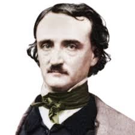

Edgar Allan Poe: was an American writer, poet, editor, and literary critic who is best known for his poetry and short stories, particularly his tales of mystery and the macabre. He is widely regarded as a central figure of Romanticism in the United States, and of American literature. He was one of the country's earliest practitioners of the short story, and is considered the inventor of the detective fiction genre, as well as a significant contributor to the emerging genre of science fiction. He is the first well-known American writer to earn a living through writing alone, resulting in a financially difficult life and career.
Poe was born in Boston, the second child of actors David and Elizabeth "Eliza" Poe.[3] His father abandoned the family in 1810, and when his mother died the following year, Poe was taken in by John and Frances Allan of Richmond, Virginia. They never formally adopted him, but he was with them well into young adulthood. He attended the University of Virginia but left after a year due to lack of money. He quarreled with John Allan over the funds for his education, and his gambling debts. In 1827, having enlisted in the United States Army under an assumed name, he published his first collection, Tamerlane and Other Poems, credited only to "a Bostonian". Poe and Allan reached a temporary rapprochement after the death of Allan's wife in 1829. Poe later failed as an officer cadet at West Point, declared a firm wish to be a poet and writer, and parted ways with Allan.